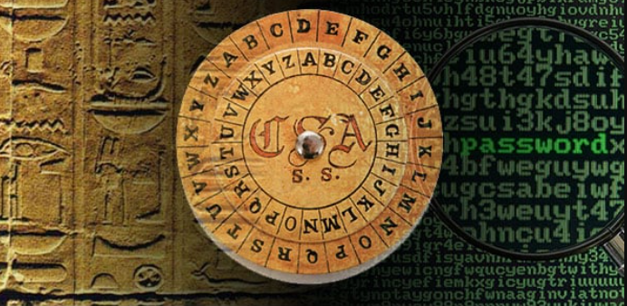

July 8, 2023 by Branislav Stojanović
Zbogom šiframa, upoznajte passkey-eve

Novi, sigurniji a ujedno i jednostavniji metod autentifikacije je u ekspanziji i preti da zameni šifre kao metod autentifikacije na koji smo svi do sada navikli. FIDO alijansa, koja zagovara autentifikacija bez sifri, je organizacija koja je uspostavila mnoge standarde i smernice za bezbednu autentifikaciju uz pomoć passkeyeva. Danas, mnoge velike organizacije poput Gugla, Majkrosofta i Epla su usvojile ovaj koncept autentifikacije bez šifri i implementirale passkeyeve u njihove sisteme i proizvode. Ali šta su to zapravo passkeyevi, na koji način rade i kako to menjaju šifre, saznajte u tekstu ispod.
Još od vremena drevnih civilizacija šifre su bile korišćene da potvrde da nego zaista jeste osoba za koju se predstavlja i da mu se može verovati. Postoje opipljivi dokazi da su civilizacije poput drevnih Grka, Rimljana pa čak i praistorijske civilizacije u Mesopotamiji u različitim formatima, koristile šifre, radi sigurne razmene poverljvih informacija. Danas, milenijumima kasnije, idalje se u velikoj meri oslanjamo na šifre svakoga dana. Koristimo ih da otključamo vrata, platimo karticom, ulogujemo se na naše naloge i mnoge drue stvare. U današnjoj eri interneta gotovo svaki sistem se oslanja na šifre kako bi pružio svojim korisnicima bezbednost. Korišćenje iste metode nakon toliko milenijuma deluje prilično staromodno.

Glavna premisa šifri je da “samo ono što znamo može potvrditi naš identitet”, ali da li je to stvarno dovoljno. Šifre su u suštini informacije, i kao takve, mogu biti predmet krađe, a oni sa manjom digitalne pismenosti su naročito izloženi. Moramo se suočiti sa realnošću: Šifre su zastrašujuće nebezbedne, i to ne zbog samog koncepta šifri već više zbog načina na koji ih ljudi koriste. Mnogi ljudi koriste kratke, jednostavne šifre poput “123456”. Ove šifre se mogu otkriti jednostavnim nagađanjem i to u samo par sekundi. Ljudi često koriste iste šifre za više različitih naloga. Ako dođe do curenja šifre samo iz jednog sistema hakeri kojima ta šifra padne u ruke imaće pristup svim nalozima tog korisnika koji su koristili tu šifru. Takođe ljudi su nekad skloni da svojevoljno izlože svoje šifre zbog praktičnosti. Nekoliko puta sam svedočio slučajevima gde su ljudi zapisivali šifre na papirić i taj papirić lepili na ekrana svojih računara. Ovime, oni su nesvesno učinili koncept šifri besmislenim. Šifre su namenjene da ostanu u tajnosti daleko od očiju i ušiju drugih. Idealno bi bilo imati jedinstvenu šifru za svaki od naloga i svaka od njih bi trebala da se sastoji od više različitih tipova karaktera, slova, brojeva i simbola kako bi se smanjio rizik da neko pogodi šifru. Ako se plašite da nećete zapamtiti kompleksne šifre, čekajte, ne uzimajte papirić i olovku dok ne probate neke od alata namenjenih u tu svrhu. Reč je o menadžerima šifri. Password menadžeri su dostupni u različitim formatima. Možete birati između online i offline alternativa kao i hardverskih uređaja. Neki od najpopularnijih online verzija su LastPass i Dashlane a najpopularnija offline alternativa je KeePass, koji je pasword menadžer otvorenog koda i besplatan je. Za one najskeptičnije koji nemaju poverenja ni u šta što ne mogu da opipaju takođe postoje i fizički, odnosno hardverski menadžeri šifri. Najpoznatiji takve vrste Yubikey. Ove smernice za bezbedno korišćenje šifru su neophodne, vaše šifre će biti značajno bezbednije ako ih primenite, ali to idalje ne garantuje apsolutnu otpornost na namere hakera da ih ukradu. Idalje postoje mnogi načini koji hakeri koriste da se dokopaju vaših šifri i predstave sa kao vi.
MFA

Iz tog razloga, razvijene su metode višefaktorske autentifikacije (MFA), a najpoznatija od njih je dvofaktorska autenfikacija poznatija pod akronimom 2FA.
Ali šta je to tačno višefaktorska autentifikacija. Faktori autentifikacije su različite kategorije ili tipovi informacija ili dokaza koji se koriste da verifikuju identitet neke osobe koja pokušava da pristupi nekom sistemu.
Tipično postoje tri faktora autentifikacije:
- Nešto što znamo (poput šifri)
- Nešto što posedujemo (poput SMS kodova na mobilnim uređajima, platnih kartica itd.)
- Nešto što jesmo (biometrijske karakteristike, poput otiska prsta, skeniranje zenice oka itd.)
Kombinovanje više faktora autentifikacije može značajno poboljšati bezbednost. Kada se koristimo MFA, iako se neko dokopao naše šifre, od idalje ne može pristupiti našem nalogu ako nema neki od ostalih faktora. Nažalost, ni MFA ne garantuje da je naš nalog stoprocentno siguran. Hakeri koriste sofictirane mteode da zaobiđu protokole višefaktorske autentifikacije iako nemaju pristup našem telefonu. Ako vas zanima način na koji hakeri zaobilaze dvofaktorsku autentifikaciju koja koristi SMS to možete pogledati na ovom videu: https://www.youtube.com/watch?v=FwGeBW6OurM. Prevare poput ove se najčešće izvode korišćenjem neke tehnike socijalnog inženjeringa i fišinga (pecanje, eng. Phishing). Fišing, kao tehnika obmanjivanja ljudi da nam otkriju poverljive informacije, je jedna od najvećih pretnji za bezbednost na internetu sa kojom se suočavamo danas, čak veća i od opasnosti koji donose malveri (maliciozni programi). Pojedina istraživanja tvrde da čak neverovatnih 91% sajber napada počinju fišingom.
Biometrijska autentifikacija se smatra nešto sigurnijom od SMS kodova, ali oda idalje nije apsolutno bezbedna a i nije nešto naročito praktično non stop skenirati lice ili otisak prsta. Takođe, kada se jednom skenira, naš obris lica postaje digitalni podatak i kao takav može biti predmet krađe, naročito ako se šalje preko mreže. Ovo može imati daleko veće posledice po nas, od toga što će haker imati pristup našem nalogu. Jednom kada se dočepa naših biometrijskih podataka, možemo postati žrtva krađe identiteta. Pod našim identitetom, haker može počiniti maliciozne radnje kakve god poželi, i time nas dovesti u prlično nezavidnu poziciju.
Šta kada bih vam rekao da postoji metod autentifikacije koji je mnogo bezbedniji od gore navedenih metoda, a istovremeno je i dostaja praktičniji, poput klika dugmeta ili skeniranja QR koda. Teško za poverovati, zvuči kao naučna fantastika? Ne brinite nisu u pitanju vanzemaljci, predstavljam vam Passkey-eve.
Passkey

Passkey-evi su postali široko poznati zahvaljujući FIDO alijansi, organizaciji koje je uspostavila mnoge standarde i omogućila sigurnu upotrebu passkey-eva. FIDO je skraćenica od Fast IDentity Online. Ova organizacija je osnovana 2013. godine sa misijom da “pomogne smanjenju prevelike zavisnosti ljudi od šifri”, kao i da omogući što brži a bezbedniju autentifikaciju u na internetu. Najbolji način da definišemo šta su to zapravo Passkeyevi je da pogledamo šta kaže sajt organizacije FIDO (https://fidoalliance.org/):
QUOTE: Passkeys /ˈpasˌkēs/ noun Prema FIDO standardima, passkey je zamane za šifre koji pruža bržu, lakšu i sigurniju autentifikaciju na veb-sajtove i aplikacije sa svim uređajima korisnika. Za razliku od šifri, passkey-evi su uvek jaki, kompleksni i otporni na fišing prevare. Passkey-evi pojednostavljuju registraciju naloge na aplikacije i veb-sajtove, takođe su laki za korišćenje i rade na većini uređaja, i čak rade na drugim uređajima koji su u neposrednoj blizini
U suštini, ne treba vam posebna šifra, token, sken lica ili prsta, kucanje dodatnih kodova, ništa od toga. Potrebno je samo da imate vaš izabrani autentifikator - što može biti vaš telefon, računar, tablet, USB itd, gde god poželite da skladištite vaše passkey-eve. Možete koristiti iste metode autentifikacije koje koristitet na vašem izabranom uređaju. Tako da ako ste navikli da telefon otključavate unošenjem obrasca, taj isti metod možete koristiti da se autentifikujete na vaš online nalog. To takođe važi i za sken lica, prsta, pin kao i druge metode koje vaš uređaj podržava. Takođe jedan od čestih metoda autentifikacije passkey-evima, koji je praktično zamena za SMS kodove kao dokaza da smo u posedu uređaja, je skeniranje QR koda našim telefonom. Kada skeniramo QR, kao dodatna mera bezbednosti, vrši se provera da li je naš uređaj u neposrednoj blizini. Ova provera blizine vrši se preko bluetooth-a. Ali ne brinite, nema potrebe da ulazite u podešavanja, palite bluetooth, uparujete uređaje ili nešto slično. Sve se izvršava automatski, u pozadini. Autentifikacija skeniranjem QR koda deluje kao jedan faktor autentifikacije, kako je onda sigurnija od dvo-faktorske? Zapravo tehnički gledano passkey-evi su idalje dva faktora. U pozadini passkey-evi koriste metode zaključavanja ekrana vašeg telefona kao drugi faktor. Tako da ako ste otključali ekran vašeg telefona podrazumeva se da već imate jedan faktor. Ustvari da biste koristili passkeyeve vaš telefon mora imati neki vid pina za zaključavanje ekrana, bio to kod, obrazac, sken lica ili prsta.
Još jedna odlična stvar u vezi passkeyeva je da pored njihove praktičnosti oni su takođe otporni na fišing prevare i krađe podataka. To je moguće zahvaljujući tehnologiji koja stoji iza njih.

Passkey ispod haube

Passkeys su implementirani preko WebAuthN odnosno WebAuthentication API-ja, koji zapravo predstavlja jedno proširenje Credential Management API-ja. Ovaj API je razvijen u saradnji FIDO alijanse i W3C organizacije(World Wide Web Consortium). API je trenutno dostupan u novijim verzijama svih popularnijih pretraživača, ali će ga zasigurno prihvatiti svi. Ključna tehnologija na kojoj se ovaj API zasniva je kritpografija javnog ključa (PKI - Public Key Infrastructure).
Suština kriptografije javnog ključa (poznate i kao asimetrična kriptografija) je u postojanju dva, matematički povezana podatka, koji se nazivaju privatni i javni ključ. Podaci šifrovani, odnosno potpisani, jednim ključem, mogu biti dešifrovani samo drugim, i obrnuto. Kao što mu ime sugeriše, privatni ključ treba da bude tajan, poznat samo svom vlasniku, dok je javni ključ dostupan javnosti i namenjen je da dokaže autentičnost i integrite poruke koja se razmenjuje.
Za svaki veb-sajt na koji se registrujemo, naš autentifikator generiše passkey, pomoću metode koju mi odaberemo. Ispod haube naš autentifikator kreira i skladišti par ključeva. Kopija javnog ključa se ujedno čuva i na serveru na koji se registrujemo i vezuje se za naš profil. Sledeći put kada želimo da se prijavimo na naš profil na tom veb-sajtu, server će nam poslati takozvani “izazov” koji trebamo da kompletiramo da bismo dokazali da jesmo onaj za koga se predstavljamo. Naš autentifikator, koji ima pristup našem privatnom ključu pravi digitalni potpis tog “izazova” i šalje ga natrag serveru. Server, koristeći naš javni ključ, može da verifikuje da smo mi zaista vlasnik odgovarajućeg privatnog ključa i da smo pravi korisnik koji pokušava da se uloguje. I to bi bilo to, autentifikovali smo se za svega par sekundi, bez potrebe da unosimo nekakve dodatne podatke.
Prednosti passkey-eva
Passkey-evi po svojoj prirodi jaki: Nema potrebe da korisnik sam osmišljava jaku lozinku sa različitim karakterima, simbolima i brojevima. Passkey-evi se kreiraju i čuvaju od strane samog autentifikatora, a korišćenje kriptografskih tehnika čini nemogućim njihovo probijanje ili pogodovanje.
Privatni ključ se nikada ne deli sa samim veb-sajtom: Na ovaj način praktično je onemogućeno da neko ko prisluškuje saobraćaj presretne i ukrade ključ. I takođe nema potrebe da korisnik išta pamti. Vaš autentifikator će se o tome pobrinuti za vas. Ako hakeri dospeju do podataka iz baze veb-sajta, sve što će moći da vide je vaš javni ključ koji je zapravo javna informacija i ne može biti korišćen bez odgovarajućeg privatnog ključa-
Passkey-evi takođe mogu biti korišćeni sa Password menadžment alatima i alatima za sinhronizaciju poput Google Password-a ili ICloud Keychain-a od Apple-a. To će omogućiti da naši passkey-evi budu dostupni na svim povezanim uređajima, a takođe će naši passkey-evi biti sačuvani u slučaju da izgubimo telefon.
Passkey-evi su takođe otporni na fišing napade: Kada se passkey kreira, on biva sačuvan u našem autentifikatoru i povezan sa veb-sajtom za koji je kreiran. Tako da iako nas haker obmane da pokušamo da se prijavimo na lažan sajt, naš autentifikator neće pokušati potpisivanje izazova privatnim ključem jer neće prepoznati da ima passkey za taj sajt, pošto je lažan.
Passkey-evi predstavljaju veliki iskorak ka obezbeđivanju sigurne autentifikacije na internetu. Oni su mnogo sigurniji od šifri a ujedno i jednostavniji za korišćenje od hardverskih ključeva, pogotovo za one koji ne vole da nose poseban uređaj sa sobom. Ako želite da isprobate praktično passkey-eve to možete uraditi na svim popularnim platformama poput onih koje imaju Google, Microsoft i Apple.